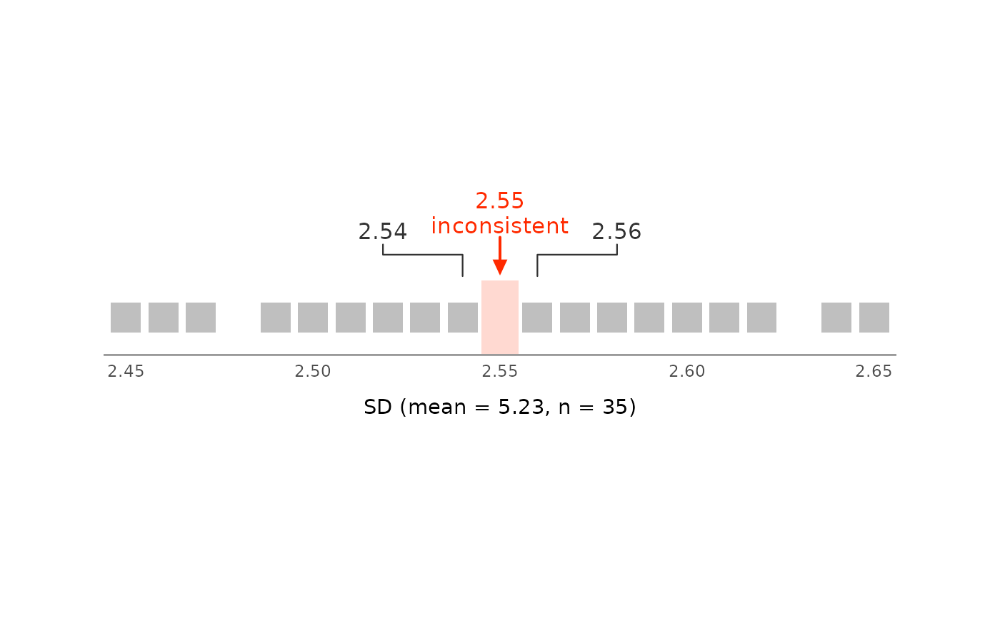
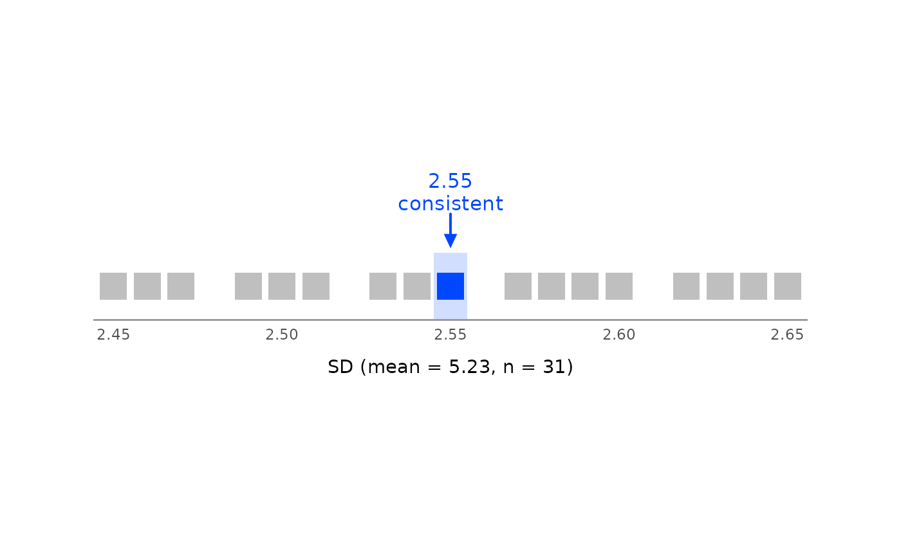

Visualize the standard deviations that GRIMMER admits
Source:R/grimmer-plot-line.R
grimmer_plot_line.Rd![[Experimental]](figures/lifecycle-experimental.svg)
grimmer_plot_line() draws the GRIMMER test for a single value set, as
grim_plot_line() does for GRIM. Of all SDs that could have been
reported with digits_sd decimal places, each square is one that a
sample of size n with mean x could have; the others are left out. The
reported SD is marked above the row and labeled as consistent or
inconsistent.
For many value sets, grim_plot_grid() accepts grimmer_map() output
and shows the GRIM part of the test.
Usage
grimmer_plot_line(
x,
sd,
n,
digits_x,
digits_sd,
items_averaged,
data_type,
sd_meaning = c("sd_sample", "sd_pop", "sd_sample_or_pop", "se"),
rounding = "up_or_down",
threshold = 5,
symmetric = FALSE,
zoom = c("close", "medium", "wide"),
color_con = "#0047ff",
color_incon = "#ff2a00",
color_attainable = "grey75"
)Arguments
- x, sd, n, digits_x, digits_sd, items_averaged, rounding, threshold, symmetric, sd_meaning
The same as in
grimmer(), butx,sd,n,digits_x,digits_sd, anditems_averagedmust have length 1.- data_type
String.
"integer"if the values are whole numbers, as ingrimmer(). There is no default, so that every call states this assumption."continuous"andNAare errors: if the data may be continuous, there are no values to draw.- zoom
String. How much of the row to show:
"close"(the default),"medium", or"wide"; see Details.- color_con, color_incon
Strings. Color of the marker, the strip behind the squares, and the square at the reported value if it is consistent.
color_conapplies if the value is consistent,color_inconif not. Defaults are"#0047ff"and"#ff2a00".- color_attainable
String. Color of the squares for attainable values that were not reported, like the consistent cells of
grim_plot_grid()'s raster. Default is"grey75".
Details
zoom works as in grim_plot_line(), but with
zoom = "wide", the row runs from the whole number at or below sd to the
next one up. It never goes below zero.
If x is GRIM-inconsistent with n, no SD is attainable and the row has
no squares.
Examples
# A mean of 5.23 with an SD of 2.55 is not consistent with a sample size of
# 35, but it is with 31:
grimmer_plot_line(
x = 5.23,
sd = 2.55,
n = 35,
digits_x = 2,
digits_sd = 2,
items_averaged = 1,
data_type = "integer"
)

grimmer_plot_line(
x = 5.23,
sd = 2.55,
n = 31,
digits_x = 2,
digits_sd = 2,
items_averaged = 1,
data_type = "integer"
)
